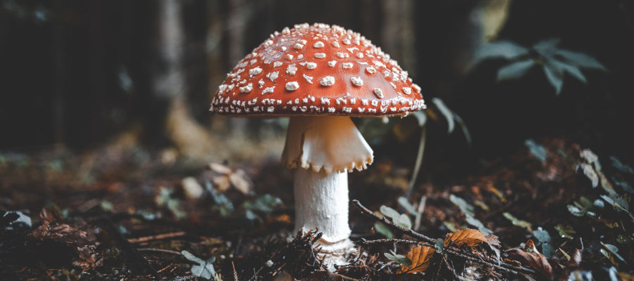

Digressões Filosóficas
Digressões Filosóficas,
um site de filosofia com conteúdos
independentes e autorais.
"O maior dos pesos
– E se um dia, ou uma noite, um demônio lhe aparecesse furtivamente em sua mais desolada solidão e dissesse: 'Esta vida, como você a está vivendo e já viveu, você terá de viver mais uma vez e por incontáveis vezes; e nada haverá de novo nela, mas cada dor e cada prazer e cada suspiro e pensamento, e tudo o que é inefavelmente grande e pequeno em sua vida, terão de lhe suceder novamente, tudo na mesma sequência e ordem – e assim também essa aranha e esse luar entre as árvores, e também esse instante e eu mesmo. A perene ampulheta do existir será sempre virada novamente – e você com ela, partícula de poeira!'.
Você não se prostraria e rangeria os dentes e amaldiçoaria o demônio que assim falou? Ou você já experimentou um instante imenso, no qual lhe responderia: 'Você é um deus e jamais ouvi coisa tão divina!'. Se esse pensamento tomasse conta de você, tal como você é, ele o transformaria e o esmagaria talvez; a questão em tudo e em cada coisa, 'Você quer isso mais uma vez e por incontáveis vezes?' pesaria sobre os seus atos como o maior dos pesos! Ou o quanto você teria de estar bem consigo mesmo e com a vida, para não desejar nada além dessa última, eterna confirmação e chancela?".
- Friedrich Nietzsche, Gaia Ciência, aforismo 341.
Últimos textos
A EVOLUÇÃO COMO
UMA PATOLOGIA
